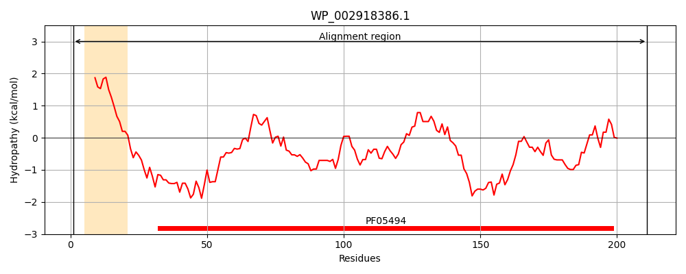
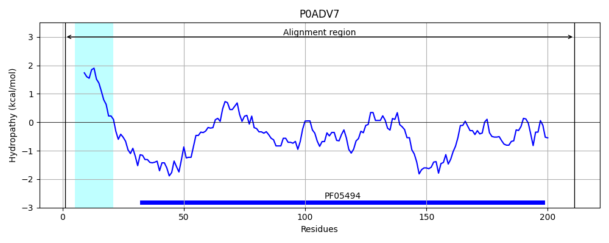
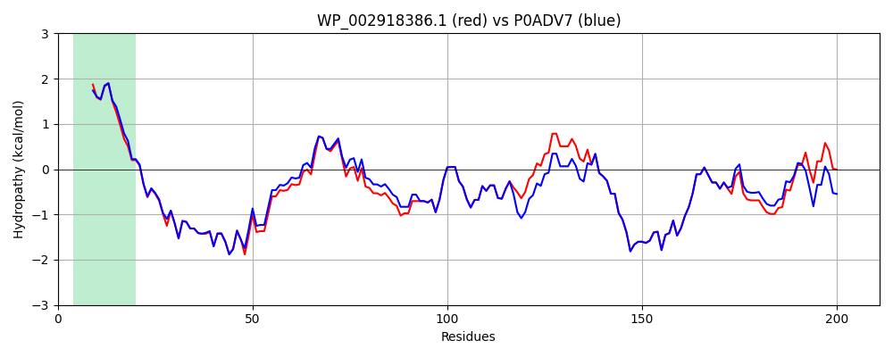

Hit Accession: P0ADV7
Hit TCID: 3.A.1.27.3
Hit Description: gnl|BL_ORD_ID|8760 gnl|TC-DB|P0ADV7|3.A.1.27.3 Probable phospholipid-binding protein mlaC OS=Escherichia coli (strain K12) GN=mlaC PE=1 SV=1
Mach Len: 211
e:0.000000
Query TMS Count : 1
Hit TMS Count: 1
TMS-Overlap Score: 0.850000
Predicted Substrates:CHEBI:8150;phospholipid
BLAST Alignment:
Score: 986 , Bit scores: 384 bits, E-value: 4.9e-138, Alignment length: 211, Percentage identity: 89
Query: 1 MFKRLLMVAMLVIAPLTAVQAADQSNPYKLMNEAAQKTFDRLKNEQPKIKANPNYLRDIVDQELLPYVQVKYAGALVLGRYYKEATPAQREAYFAAFREYLKQAYGQALAMYHGQTYQIAPEQPLGSATIVPIRVTIIDPNGRPPVRLDFQWRKNTQTGNWQAYDMIAEGVSMITTKQNEWSDLLRTKGVDGLTAQLKAISAQPITLEQKK 211
MFKRL+MVA+LVIAPL+A AADQ+NPYKLM+EAAQKTFDRLKNEQP+I+ANP+YLR IVDQELLPYVQVKYAGALVLG+YYK ATPAQREAYFAAFREYLKQAYGQALAMYHGQTYQIAPEQPLG TIVPIRVTIIDPNGRPPVRLDFQWRKN+QTGNWQAYDMIAEGVSMITTKQNEW LLRTKG+DGLTAQLK+IS Q ITLE+KK
Sbjct: 1 MFKRLMMVALLVIAPLSAATAADQTNPYKLMDEAAQKTFDRLKNEQPQIRANPDYLRTIVDQELLPYVQVKYAGALVLGQYYKSATPAQREAYFAAFREYLKQAYGQALAMYHGQTYQIAPEQPLGDKTIVPIRVTIIDPNGRPPVRLDFQWRKNSQTGNWQAYDMIAEGVSMITTKQNEWGTLLRTKGIDGLTAQLKSISQQKITLEEKK 211 | Protein Hydropathy Plots: |
|---|
|  |  |
Pairwise Alignment-Hydropathy Plot:
|
|---|
|  |